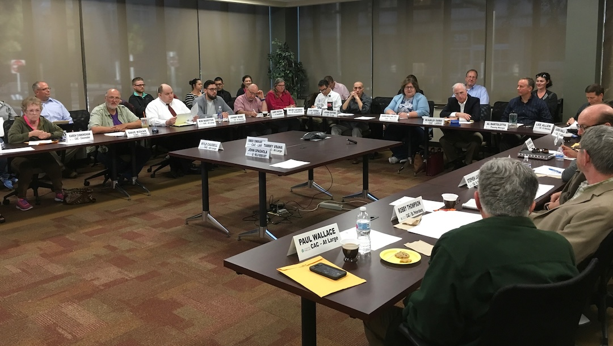

Code & AI-driven solutions
Technical thinking that solves real problems
We bring engineering-minded thinking into business problems that usually get stuck between the technical team and the real world.
We’re the D’Onofrio's — a family of builders, problem-solvers, and straight shooters.
Learn More About Who We AreSome families argue about holidays. We argue about strategy, messaging, analytics, and how to improve customer experience. And honestly, it works.
Your customers are more sophisticated than ever. They expect personalized experiences, authentic communication, and solutions that actually work. We help businesses talk and function like humans again.
We bring engineering-minded thinking into business problems that usually get stuck between the technical team and the real world.

Customers, voters, community members, and decision-makers all hear things differently. We help you say it clearly and credibly.
We combine media, marketing, outreach, and positioning so your business is easier to understand and easier to trust.
With expertise spanning AI, sales, marketing, and public affairs, we help you understand what your customers truly need and deliver it in ways that build loyalty and drive growth.

Lead Talker
Dave has spent decades in high-pressure conversations with millions of dollars on the line. He helps clients shape the message and move tough discussions in the right direction.

Lead Thinker
Bill brings decades of experience leading teams and finding the path that fits a client’s needs, budget, and goals.

Lead Creative
Ryan combines AI engineering, creative thinking, and technical problem-solving to help clients find smart solutions and move ideas forward.

Lead Marketer
Melissa knows how to get the right message in front of the right people. She helps clients build awareness and turn attention into action.

Lead Strategist
Alex works across teams to keep projects moving and ideas sharp. He helps turn plans into clear, steady progress.

Lead Analyst
Allison turns data into clear direction. She helps clients understand what’s working, what’s not, and what to do next.

Lead Sales
Nick builds relationships and gets deals across the finish line. He helps clients connect, close, and grow.

Lead Coordinator
TJ keeps everything organized and on track. He makes sure the details are handled so nothing slips through.
The site includes a Supabase-powered blog so you can keep publishing after the WordPress move.
Four decades of combined expertise in AI, sales, marketing, and public affairs. We bridge the gap between your business and the customers who matter most.
North Jersey/New York City
Northern Virginia/Washington DC
Sacramento/San Francisco, CA
Grand Strand, SC